Daydreamer Cafe
Tucked off the street, so it never feels crowded. Big enough for a group to spread out and study, with a seasonal drink menu the baristas will happily walk you through. Open 10 to 2 daily, so plan around it.
Athens students don't drink coffee so much as negotiate with it. Cold brew for the 8 a.m., something with too much syrup for the 4 p.m. slump. Here's where to get it all.
Check out the gallery below!
Back HomeTucked off the street, so it never feels crowded. Big enough for a group to spread out and study, with a seasonal drink menu the baristas will happily walk you through. Open 10 to 2 daily, so plan around it.
Small, quiet, right in the middle of downtown. The newer of their two locations. Weekdays 7 to 5, weekends 8 to 4.
The original, and the one that hosts art markets. Rotating seasonal menu that's worth checking each time you go.
The roaster with the best reputation in town. Bright, plant-filled, sustainability-focused, and the place to go if you want your coffee to actually taste like coffee. Weekdays 7 to 6.
Newer downtown spot that fills up with students. Good wifi, and the matcha gets called out constantly. Prices run a bit higher than average, and parking is tight. Open 7 to 6 every day.
Really a bakery that serves great coffee, and worth the trip for the sourdough and croissants alone. Patio seating. Closed Mondays.
A board game cafe more than a coffee shop. There's a $7 per person fee to play, food and drinks on top. Opens at 11, runs late on weekends. Better for a group hang than a study session.
Drive-thru chain out on the highway. Sweet drinks, fast service, open 5 a.m. to 10 p.m. Not the place for a quiet afternoon, but it'll get you caffeinated at dawn.
Another drive-thru on Atlanta Highway, similar deal. Huge sizes, lots of flavor options, open 5:30 a.m. to 10 or 11.
Chain, but this location has a genuinely well-liked crew. Breakfast food alongside the drinks, drive-thru, open 6 to 6 daily.
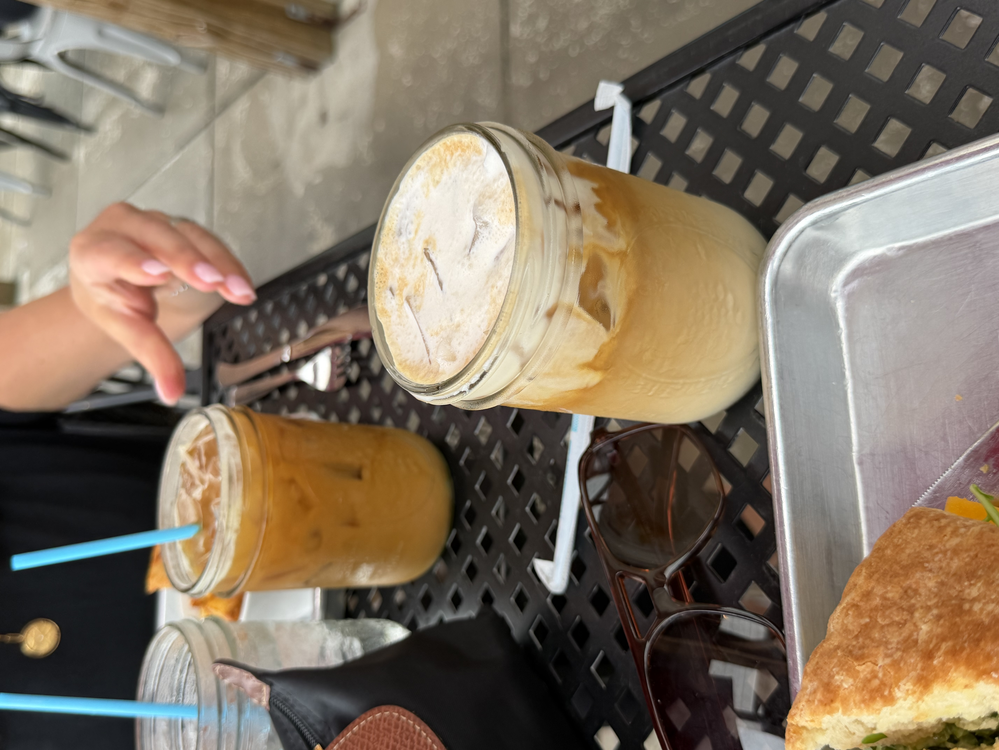
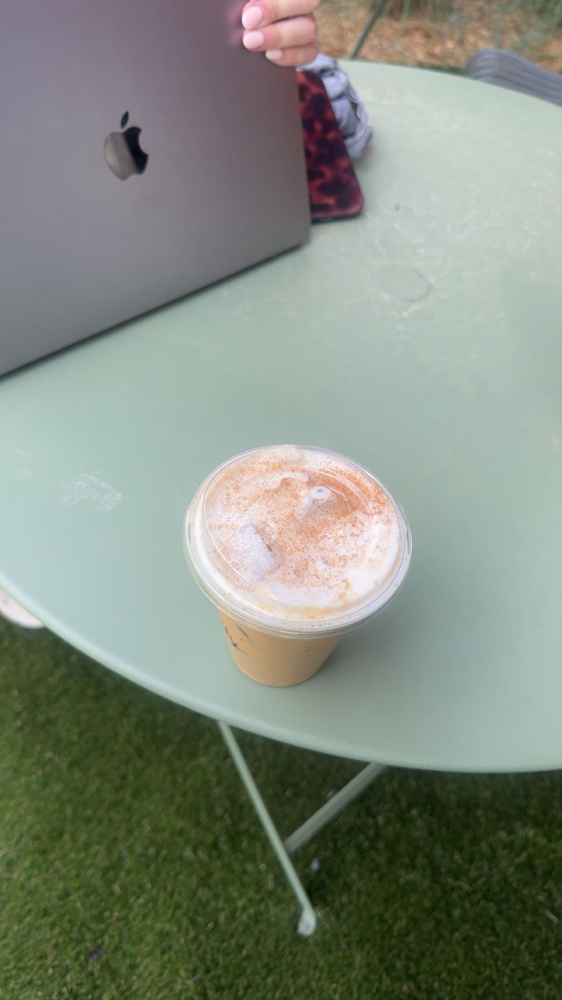
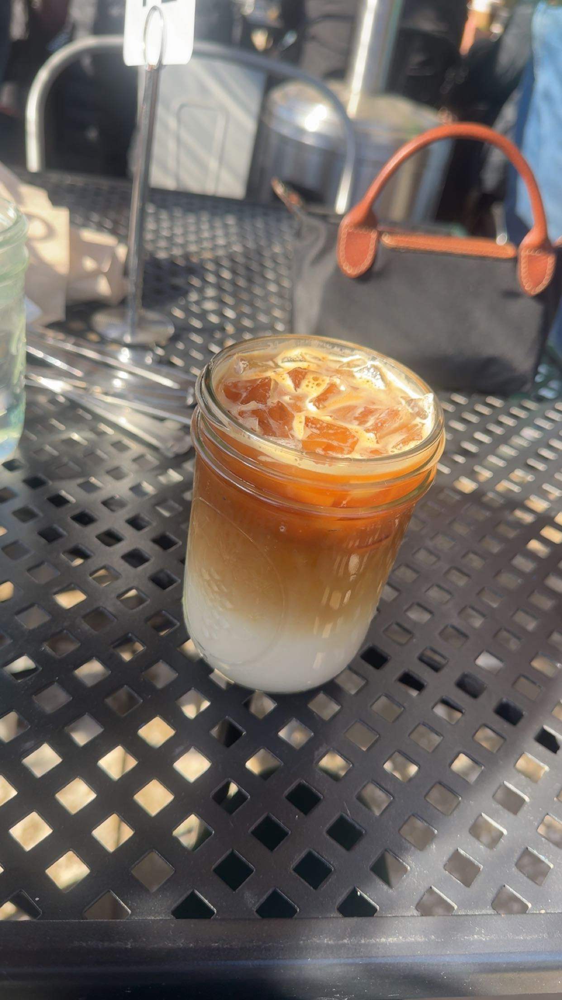
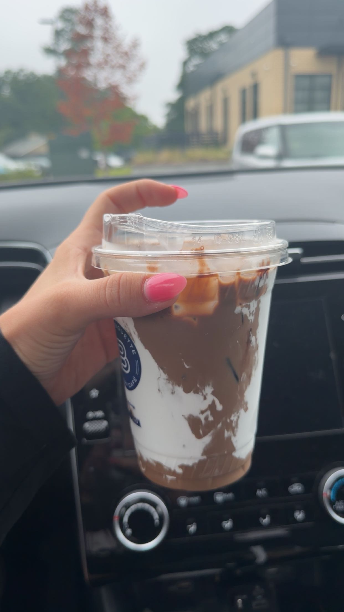
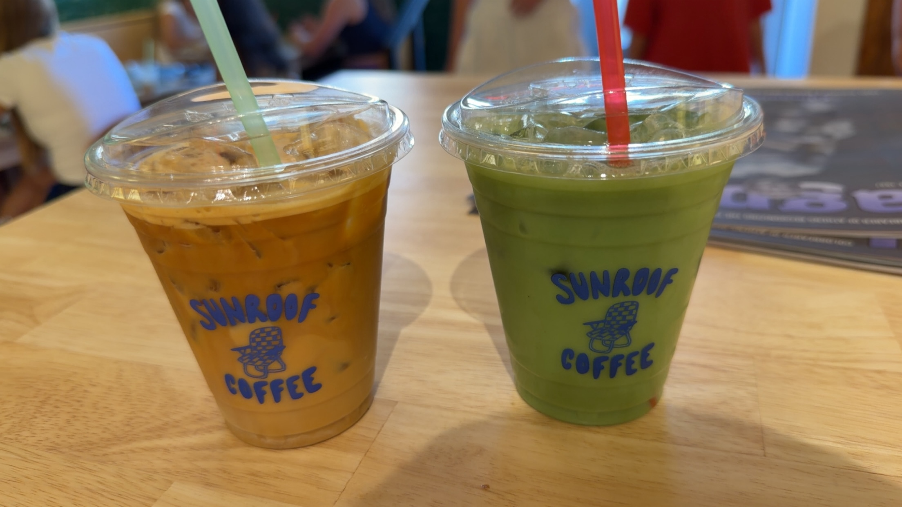
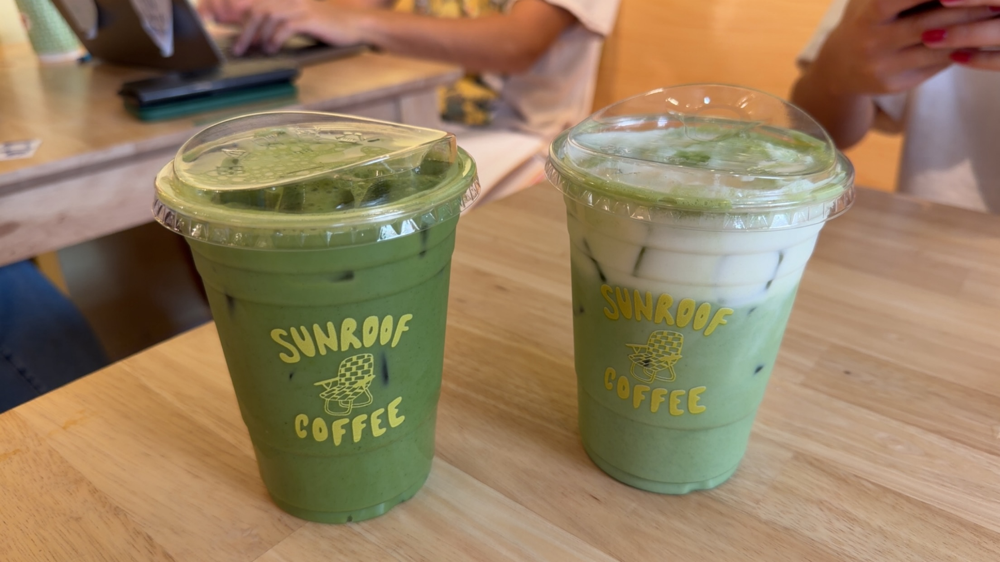
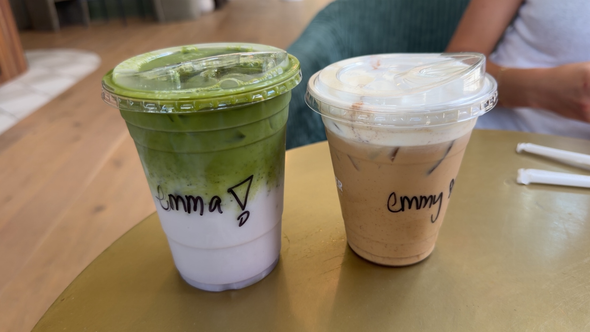
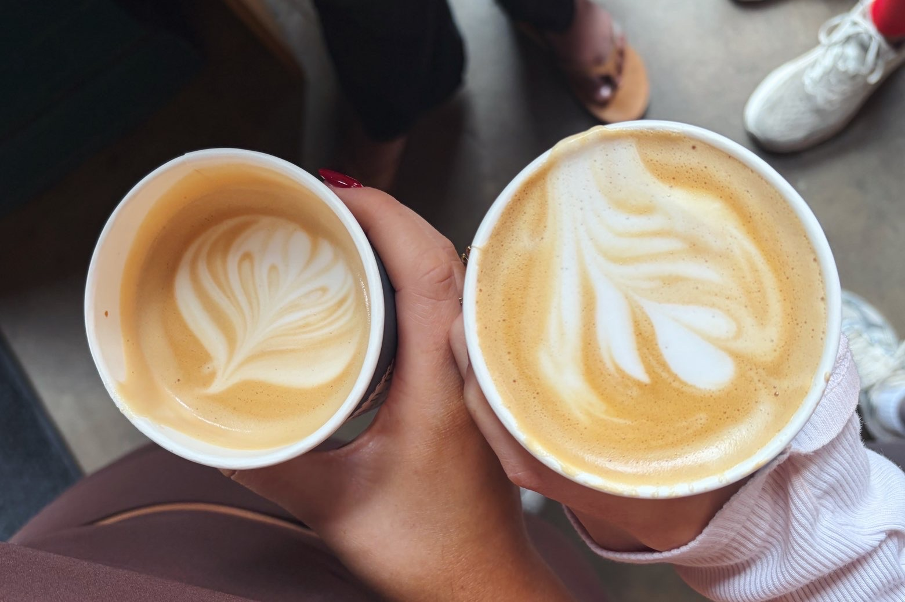
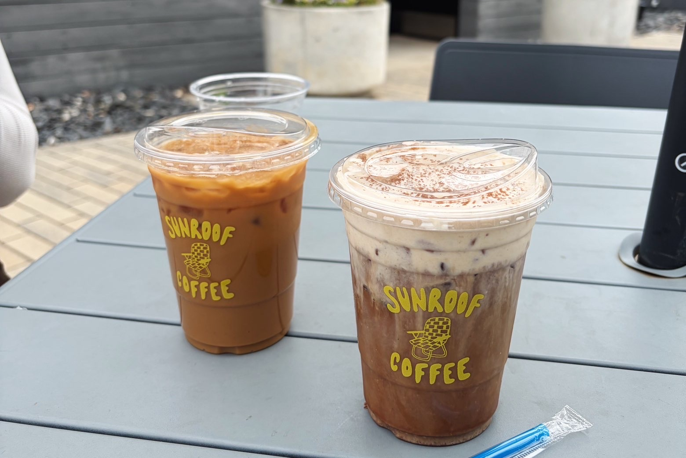
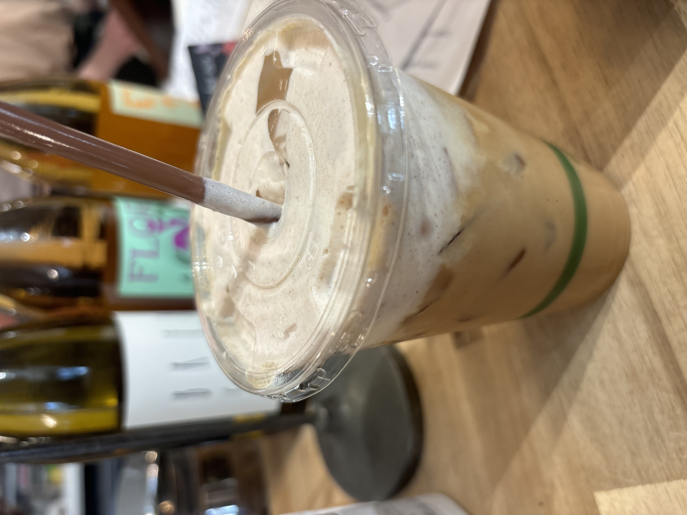

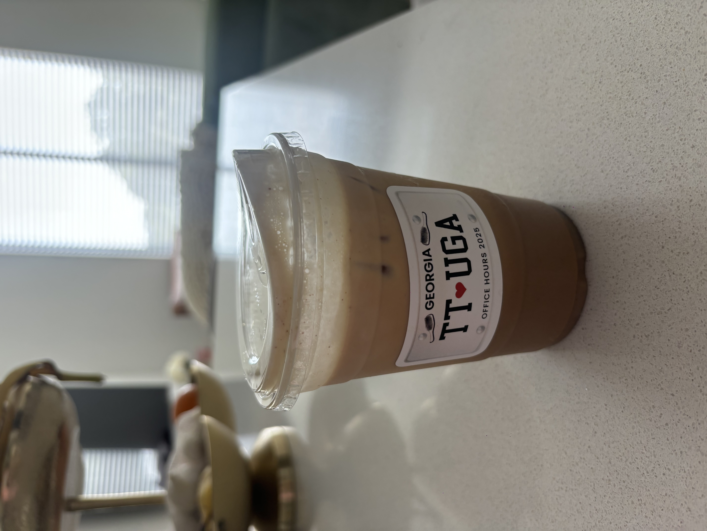
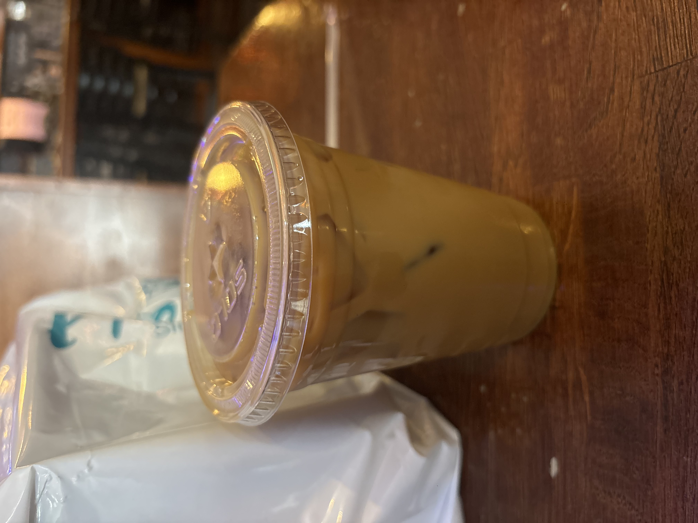
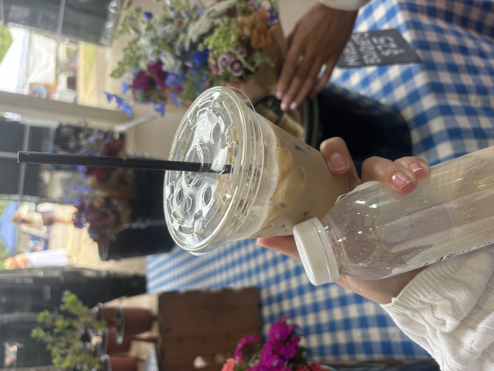
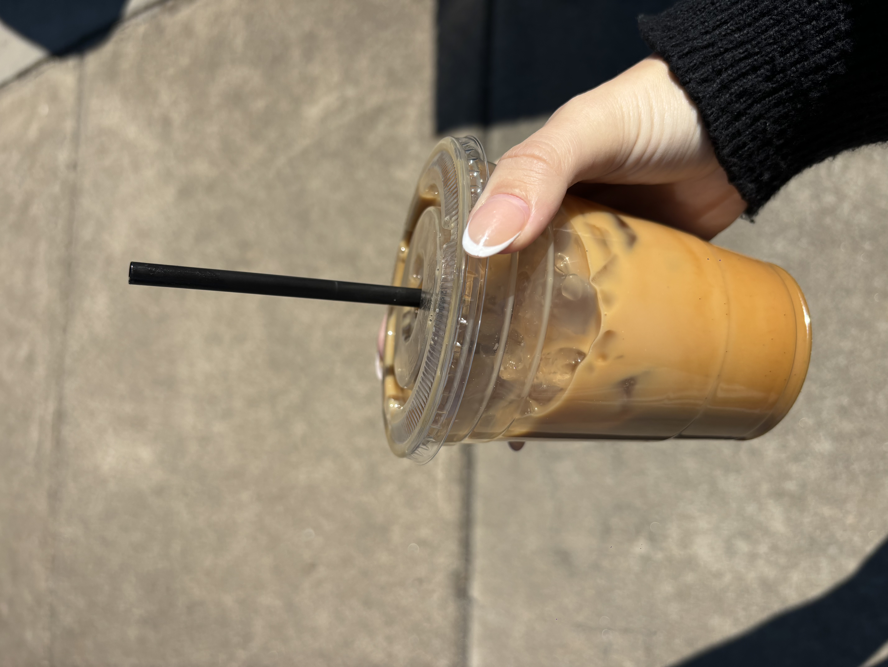